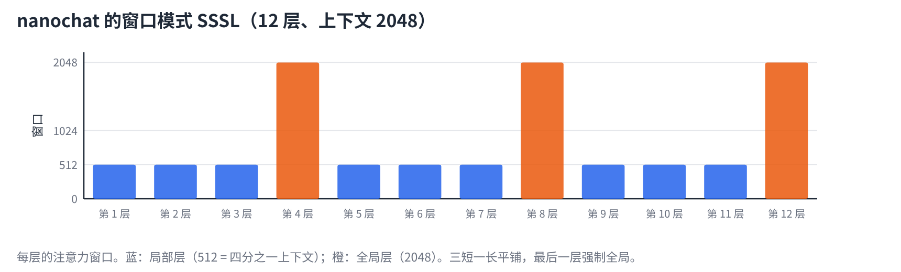
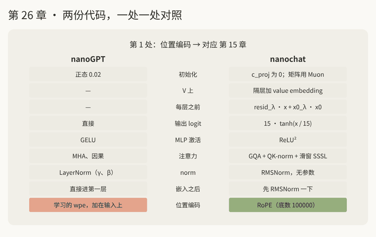

第 26 章 · 读源码：nanoGPT 和 nanochat 逐项对比
本地运行
git clone https://github.com/wikieden/beyond-transformer
cd beyond-transformer/code/notebooks
pip install jupyterlab torch numpy
jupyter lab ch26_nanochat.ipynb也可以下载后直接用 VS Code 打开 .ipynb 运行。需要 GPU 的章节在 Colab 里选「代码执行程序 → 更改运行时类型 → GPU」。
本章回答：Karpathy 的 nanoGPT 是 GPT-2 式的最小实现，nanochat 是他几年后按现代配方重写的。两份代码放在一起，到底改了哪些地方？位置编码、norm、激活、注意力、初始化、输出层各换成了什么，又各对应本书哪一章？nanochat 里还多了几样论文里不常见的小技巧（残差系数、value embedding、smear），它们在做什么？
讲解日期：2026-11-26 · 上一章：第 25 章 MLA · 下一章：第 27 章 MoE
对应原文：nanoGPTtransformer-deep-dive/materials/code/nanoGPT/repo/model.py：LayerNorm（可选 bias）L18–L27、CausalSelfAttention L35–L68、MLP（GELU）L82–L89、Block L98–L100、学习的位置嵌入 wpe L128、嵌入和输出层共享 L138、c_proj 按 0.02/√(2L) 初始化 L144–L145；nanochattransformer-deep-dive/materials/code/nanochat/repo/nanochat/gpt.py：文件头的特性列表 L1–L13、GPTConfig（n_kv_head、window_pattern = "SSSL"）L29–L39、无参数 norm L42–L43、value embedding 的分配 has_ve L53–L55、RoPE 的实现 L57–L65、注意力里的 value embedding 门控和 QK-norm L84–L102、ReLU² MLP L131–L139、Block（Pre-norm）L150–L152、resid / x0 系数与 smear、backout L179–L188、初始化 L220–L241、RoPE 底数 100000 L270、窗口计算 L287–L313、前向（嵌入后 norm、smear、x0 混入、backout、soft-cap = 15）L470–L515；优化器分组（Muon + AdamW）L419–L450
本章缩写：wpe = word position embedding（学习的位置嵌入表）；wte = word token embedding（词嵌入表）；weight tying（权重共享：嵌入表和输出层用同一个矩阵）；ReLU²（ReLU 再平方）；QK-norm（第 18 章）；value embedding（值嵌入：直接按 token 编号查表加到 V 上）；smear（涂抹：把前一个 token 的嵌入按门控混进当前位置）；backout（退回：输出前减去中间层的残差）；Muon（一种对矩阵参数做正交化更新的优化器）；FA3 = FlashAttention 3。全部缩写见 附录 · 缩写与术语表
讲解
第一步：差异总表（2026-11-26）
类比：同一个作者隔几年重写的同一道菜谱。 主体流程（嵌入 → N 个块 → norm → 输出层）没变，几乎每样配料都换了新的。
| 项目 | nanoGPT（GPT-2 式） | nanochat（现代配方） | 本书 |
|---|---|---|---|
| 位置编码 | 学习的位置表 wpe（L128），加在输入上 | RoPE，底数 100,000（L270），每层转 q、k | 第 15 章 |
| norm 位置 | Pre-norm（L98–L100） | Pre-norm（L150–L152），嵌入后也 norm（L473） | 第 12 章 |
| norm 种类 | LayerNorm，可选 bias（L18–L27） | F.rms_norm，没有可学参数（L42–L43） |
第 13 章 |
| MLP 激活 | GELU（L83） | ReLU²（L139） | 第 14 章 |
| bias | 默认有（GPT-2 兼容） | 全部没有（L77–L80） | 第 13 章 |
| 注意力 | MHA，因果 | GQA（n_kv_head，L34）+ QK-norm（L102）+ 滑窗（SSSL，L39） | 第 18、22、23 章 |
| 嵌入与输出层 | 共享权重（L138） | 不共享（文件头 L6） | — |
| 输出 logit | 直接 | soft-cap = 15（L509–L512） | 第 23 章 |
| 初始化 | 正态 0.02，残差投影再除以 √(2L)（L144–L145） | 均匀分布（同方差）；残差投影 c_proj 初始化为 0（L230–L232） | — |
| 优化器 | AdamW | 矩阵用 Muon，嵌入、标量用 AdamW（L419–L450） | 《数学与实验统计》第 43 章 |
| 注意力内核 | PyTorch SDPA（L44–L45） | FlashAttention 3，不行时退回 SDPA | 第 33 章 |
几乎每一行都对应本书前面的某一章：nanochat 就是段 B、段 C 讲过的零件的一份“标准答案”。
一句话：nanochat 相对 nanoGPT 换了位置编码（RoPE）、norm（无参数 RMSNorm，嵌入后也 norm）、激活（ReLU²）、注意力（GQA + QK-norm + 滑窗）、输出（soft-cap）、初始化（残差投影为 0）和优化器（Muon）。
第二步：几个零件算一遍（2026-11-26）
ReLU² 和 GELU：
| x | −2 | −0.5 | 0.5 | 1 | 2 |
|---|---|---|---|---|---|
| GELU | −0.0454 | −0.1543 | 0.3457 | 0.8412 | 1.9546 |
| ReLU² | 0 | 0 | 0.25 | 1 | 4 |
ReLU² 在负半轴严格为 0（更稀疏），正半轴增长得比线性快；不用门控，也不用 SwiGLU 的第三个矩阵（MLP 还是 d → 4d → d）。
无参数 RMSNorm：[1, 2, 3, 6] → [0.2828, 0.5657, 0.8485, 1.6971]，和第 13 章一样，只是没有 g。
输出 soft-cap = 15：[5, 15, 30, 100] → [4.82, 11.42, 14.46, 15.0]。
窗口模式 SSSL（12 层、上下文 2048；S = 四分之一上下文，向上取到 128 的倍数；最后一层强制 L）：
| 层 | 1 | 2 | 3 | 4 | 5 | … | 12 |
|---|---|---|---|---|---|---|---|
| 窗口 | 512 | 512 | 512 | 2048 | 512 | … | 2048 |
三层局部、一层全局，和第 23 章的 Gemma 系列是同一个思路。

图 26-1 · 12 层的窗口大小。蓝色是局部层（512），橙色是全局层（2048）；最后一层强制全局一句话：nanochat 的 MLP 用 ReLU²（负半轴为 0、正半轴平方），norm 没有参数，输出 logit 压在 ±15，窗口按 SSSL 平铺。
第三步：论文里不常见的几个小技巧（2026-11-26）
nanochat 里还有几样在大厂技术报告里不常见的东西，多来自 modded-nanogpt 这类“速通”社区的实验：
| 技巧 | 代码 | 做什么 |
|---|---|---|
| 残差系数 resid_lambda | L182、L238 | 每层进入前主干乘一个可学标量，初始化从第 1 层的 1.15 线性降到最后一层的 1.05 |
| x0 混入 x0_lambda | L183、L241、L497 | 每层把最初的嵌入 x0 按可学系数加回来，初始化 0.20 → 0.05 |
| value embedding | L53–L55、L93–L97、L192 | 隔一层（含最后一层）直接按 token 编号查一张表，按门控加到 V 上；12 层时是第 1、3、5、7、9、11 层（从 0 数） |
| smear | L185–L186、L475–L479 | 把前一个 token 的嵌入按门控混进当前位置（便宜的二元组信息） |
| backout | L188、L499–L507 | 输出前减去中间层残差的 0.2 倍，去掉低层特征 |
| 残差投影初始化为 0 | L230、L232 | 每个块一开始是恒等映射，训练从“浅网络”起步（和第 20 章 DeepNorm 的 β 是同一个直觉） |
这些改动在小模型、短训练上有收益，是否适用于大模型还没有定论。读源码时把它们和“标准配方”分开看。
一句话：nanochat 还加了残差系数、x0 混入、value embedding、smear、backout 和零初始化残差投影，多来自速通社区，属于“实验性”的部分。
第四步：读源码的方法（2026-11-26）
对照读两份代码时：
- 先读文件头的特性列表和配置类（nanochat L1–L39）：作者自己总结了改动；
- 再顺着 forward 读一遍（L470–L515）：嵌入 → 前处理 → 每层 → 后处理 → 输出，标出每一步对应哪个零件；
- 最后读初始化和优化器分组（L204–L260、L419–L450）：这部分最容易被忽略，却直接影响能不能训好。
场景代码：nanochat 的块和前向（摘自 gpt.py L150–L152、L470–L512，节选）：
def forward(self, x, ve, cos_sin, window_size, kv_cache): # Block
x = x + self.attn(norm(x), ve, cos_sin, window_size, kv_cache) # Pre-norm，norm 无参数
x = x + self.mlp(norm(x))
...
x = norm(self.transformer.wte(idx)) # 嵌入后先 norm
for i, block in enumerate(self.transformer.h):
x = self.resid_lambdas[i] * x + self.x0_lambdas[i] * x0 # 残差系数 + x0 混入
x = block(x, ve, cos_sin, self.window_sizes[i], kv_cache)
logits = 15 * torch.tanh(self.lm_head(norm(x)).float() / 15) # soft-cap
把这张差异表写进自己的笔记、在 a1 模型上实现 GQA、滑窗、QK-norm、soft-cap 和 KV cache 解码，是里程碑 T-M5。
一句话：读源码先看特性列表和配置，再顺着 forward 标零件，最后别漏了初始化和优化器分组。
动画演示：两份代码逐行对照

可交互版：animations/26-nanochat.html（▶ 播放 / → 单步：每一步高亮一个差异）。
怎么看：
- 左边是 nanoGPT 的一个块，右边是 nanochat 的一个块，按数据流从下往上排；
- 每一步高亮一处差异（位置编码、norm、激活、注意力、输出……），中间写出对应本书哪一章（第一步）；
- 最后几步出现 nanochat 特有的小技巧（第三步）。
练习与作答记录
题 1（第一步）：nanoGPT 把嵌入表和输出层共享权重，nanochat 不共享。共享能省多少参数（词表 32,768、d = 768）？为什么大模型通常不共享？
题 2（第二步）：24 层、上下文 4096、模式 SSSL，每层的窗口是多少？有几层是全局的？
题 3（第三步）：残差投影 c_proj 初始化为 0。第一次反向传播时，c_proj 自己的梯度是不是 0？块里 c_q、c_fc 这些在它前面的权重，梯度又是多少？第二步之后会怎样？
口诀
同一本菜谱重写：位置换 RoPE，norm 换无参 RMS、嵌入后也 norm，激活换 ReLU 平方，注意力加 GQA、QK-norm、三短一长，输出 cap 十五。
初始化残差投影为零，优化器矩阵用 Muon。
速通小技巧：残差系数、x0 混入、值嵌入、smear、backout，分开看。
读源码：先特性、再 forward、最后初始化和优化器。
本章复习卡片
必背：B60（nanoGPT → nanochat 的差异表和各自对应的章、nanochat 特有的技巧）。练习做完后，按答错、卡住的地方再补。
附录 · 延伸阅读
留给以后深入学习用，不影响本章主线。★ 是建议先读的。
推荐阅读
| 读什么 | 读哪里 | 读它为了什么 |
|---|---|---|
★ nanochat gpt.py |
L1–L313、L419–L515 | 现代配方的一份完整实现 |
★ nanoGPT model.py |
L18–L180 | GPT-2 式的基准 |
| modded-nanogpt（GitHub，在线） | README 的改动记录 | value embedding、smear 等技巧的来源 |
| 《数学与实验统计》第 43 章 现代优化器 | Muon 一节 | nanochat 用的优化器 |
| 本书 第 11 章 读原版源码 | 全部 | 读源码的另一个例子 |
数学原理
- 零初始化残差投影：块 f(x) = W_O·g(x)，W_O = 0 时 f ≡ 0，整个网络在初始化时是恒等映射加最后的输出层。
- ReLU²：(max(0, x))²，导数 2·max(0, x)；比 ReLU 更稀疏的“开关”加上平方的放大。
- weight tying：嵌入表 E（V × d）同时当输出层 W_out = E，省 V·d 个参数。
公式清单
| 公式 | 意思 |
|---|---|
| \(x \leftarrow x + f(\text{RMSNorm}(x))\)（无参数） | nanochat 的块 |
| \(\text{ReLU}^2(x) = \max(0, x)^2\) | MLP 激活 |
| \(x \leftarrow \lambda^{resid}_i x + \lambda^{x0}_i x_0\) | 每层前的残差系数和 x0 混入 |
| \(15\cdot\tanh(\text{logits}/15)\) | 输出 soft-cap |
代码对照：把本章的数字用代码算一遍
NumPy。代码在仓库本地
beyond-transformer/solutions/chapter-code/ch26_nanochat.py，配套测试tests/test_ch26.py，notebook 在notebooks/ch26_nanochat.ipynb：
bash cd beyond-transformer/solutions/chapter-code uv run python ch26_nanochat.py uv run pytest tests/test_ch26.py
讲义 ↔ 代码：
| 讲义 | 公式 | 写法 | 跑出来 |
|---|---|---|---|
| 第二步 激活 | GELU vs ReLU² | gelu、relu2 |
ReLU²(2) = 4 |
| 第二步 norm、soft-cap | 无参数 RMS；15·tanh | rms_norm_noparam、softcap |
100 → 15.0 |
| 第二步 窗口 | SSSL | window_sizes() |
[512, 512, 512, 2048] × 3 |
| 第三步 小技巧 | 初始化 | resid_x0_init()、has_ve(i) |
1.15 → 1.05；第 1、3 … 11 层 |
关键几行：
return np.maximum(x, 0) ** 2 # ReLU²
short = -(-seq // 4 // 128) * 128 # 四分之一上下文，向上取到 128 的倍数
resid = [1.15 - 0.10 * i / max(n_layer - 1, 1) for i in range(n_layer)]
return i % 2 == (n_layer - 1) % 2 # 隔一层有 value embedding，含最后一层
代码里才看得到的 2 件事：
- 注释和代码对不上：nanochat 的窗口计算旁边注释写着“2048 → 768”，可按代码
-(-2048 // 4 // 128) * 128算出来是 512。读源码时以代码为准，注释可能是旧版本留下的。 - RoPE 的写法是“前后两半配对”：nanochat 的
apply_rotary_emb（L57–L65）把向量切成前后两半，和 a1 的相邻配对不同（第 15 章），而且注释说转的是 −θ；只要训练和推理一致就没问题。
自己改一改（不影响练习答案）：
- 把
window_sizes的模式改成 "SL"，12 层里有几层全局？ - 把
resid_x0_init的层数改成 24，第 12 层的两个系数各是多少？